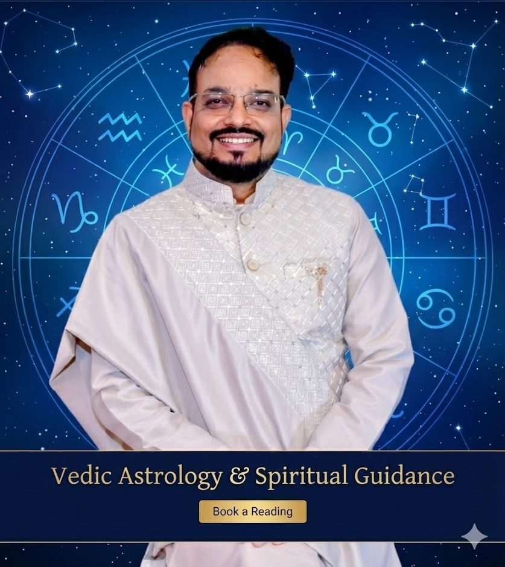

In a quiet town where the nights were deeper than most, a boy learned early that the stars sometimes lingered a little longer over certain roofs, as if listening.
About

One unremarkable day, he arrived at an IIT campus—a bastion of higher learning where brilliant minds converged—to study the intricacies of engineering, drawn by the promise of a world built on clean logic and endless code.
There, amid lecture halls and labs filled with the soft click of keyboards, he immersed himself in his studies for those formative years.
After graduating, he ventured into the professional world, crafting software for fleeting startups and enduring corporates—worlds that rose and fell like breaths in sleep.


Yet, in the quiet hours between deadlines, ancient maps began to appear—as if the night sky itself unfolded them on his desk.
Vedic charts shimmered faintly under the glow of his laptop screen. Lo Shu grids emerged in the patterns of falling leaves. Lines from the Bhagavad Gita and Ashtavakra Gita drifted through the air like incense no one else could smell.
He treated them as he treated any unknown variable: with gentle experiments.
He drew charts for friends over late-night chai, for family during festival visits, for strangers who wrote to him out of nowhere. All without charge, the way one tests a theorem in solitude.
Over twelve years, he watched hundreds of lives unfold. The sidereal zodiac held true to the fixed stars. The 27 Nakshatras traced the moon’s subtle mansions. The Vimshottari Dasha wove time into a precise 120-year tapestry.
The patterns were simply there—no fanfare, no astonishment. Just the quiet certainty of rain arriving when the clouds gather.
:max_bytes(150000):strip_icc():focal(749x0:751x2)/horoscope-vedicastrology-wheel-051024-f777a7111b7d41768391af605cbe07c6.jpg)

One evening, without warning, the boy who had been seeking looked up and found no one looking back.
The separate self dissolved as gently as mist at dawn. What remained was an open space, named AstroShivraj.
In this space, two paths lie side by side, ordinary as footpaths yet luminous under moonlight.
Cosmic Decode
Clear readings in Vedic astrology and numerology, offered to those navigating the turning points of life—careers that shift like seasons, relationships that deepen or fade, cycles of abundance and reflection.
Guidance as straightforward as starlight.
Wisdom Path
A quiet pointing to what is already here: the boundless awareness beyond the story of a separate self.
No ceremonies. No devotion required. Just the gentle recognition of freedom that has never been absent.
No beads, no titles, no elaborate rites.
Only the patterns that reveal themselves, and the vast silence that holds everything.
If you are a founder chasing horizons, a skeptic honoring your doubts, or someone simply tired of searching—this space has always been waiting, the way the sky waits for night.
Come when you’re ready.
The door was never closed.
You are already here.